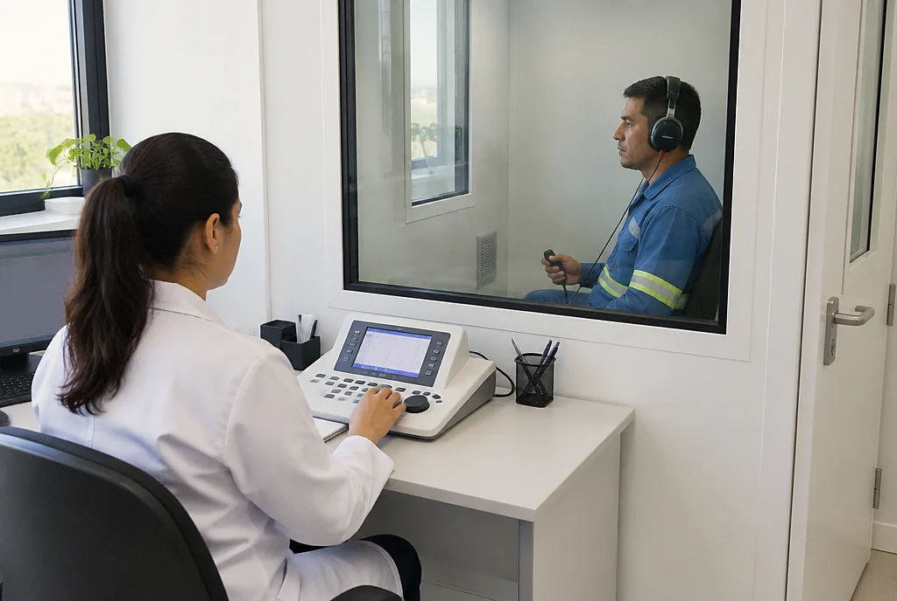

Admissional
Antes de o trabalhador começar a trabalhar. Confirma que ele está apto para a função que vai assumir.
Agendar esteInício · Exames ocupacionais
O ASO é o atestado de saúde ocupacional: o exame que a empresa pede quando você entra, de tempos em tempos, quando volta de afastamento, quando muda de função e quando sai. O exame é pago pela empresa.
Antes de o trabalhador começar a trabalhar. Confirma que ele está apto para a função que vai assumir.
Agendar esteRepetido no intervalo definido no PCMSO da empresa, conforme o risco da função e a idade do trabalhador.
Agendar esteNo primeiro dia de volta, depois de afastamento de 30 dias ou mais por doença ou acidente.
Agendar esteAntes de o trabalhador mudar de função ou de setor com riscos diferentes dos que tinha.
Agendar esteNo desligamento, dentro do prazo da NR-7. Fecha o acompanhamento de saúde do trabalhador na empresa.
Agendar este
Além da consulta com o médico do trabalho, o PCMSO da empresa pode pedir exames de acordo com o risco da função. Na hora de agendar, a equipe confirma quais são os seus.
Preencha os campos e toque em enviar. A mensagem abre no WhatsApp já pronta, e a equipe responde com o dia e o horário.
Pelo WhatsApp. Preencha o formulário desta página com o seu nome, a empresa, o tipo de exame e a função: a mensagem já vai pronta, e a equipe responde com o dia e o horário.
Documento com foto e a guia de encaminhamento da empresa, se ela tiver mandado. Se usa óculos ou lente, leve. Exames anteriores também ajudam.
A empresa. Pela NR-7, os exames ocupacionais são custeados pelo empregador, sem custo para o trabalhador.
Atende empresas de Rio das Ostras e região. Fale com a equipe pelo WhatsApp para combinar o atendimento da sua equipe.
A SegTrab organiza o PCMSO, o calendário de exames e os eventos do eSocial da sua empresa.